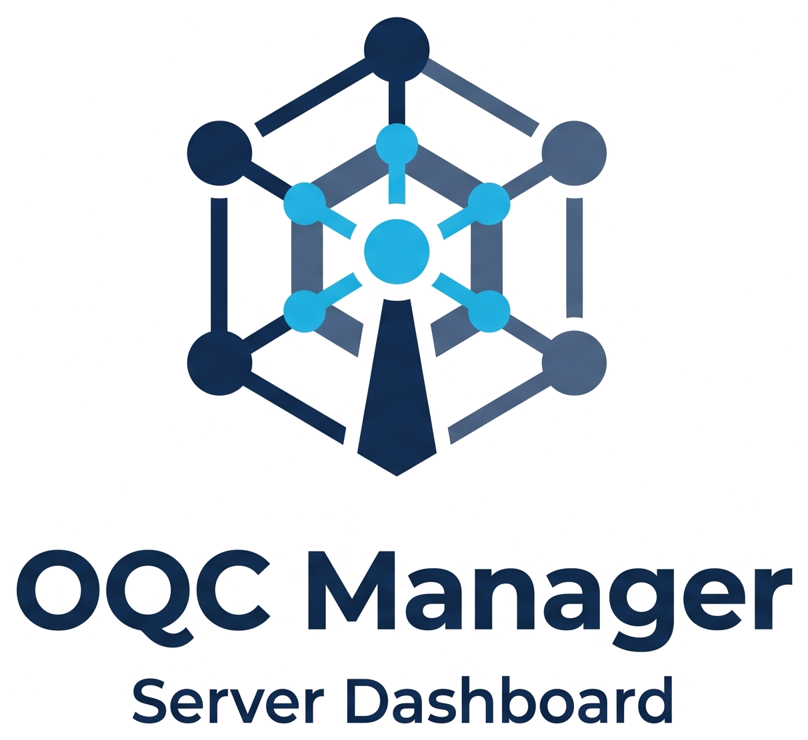
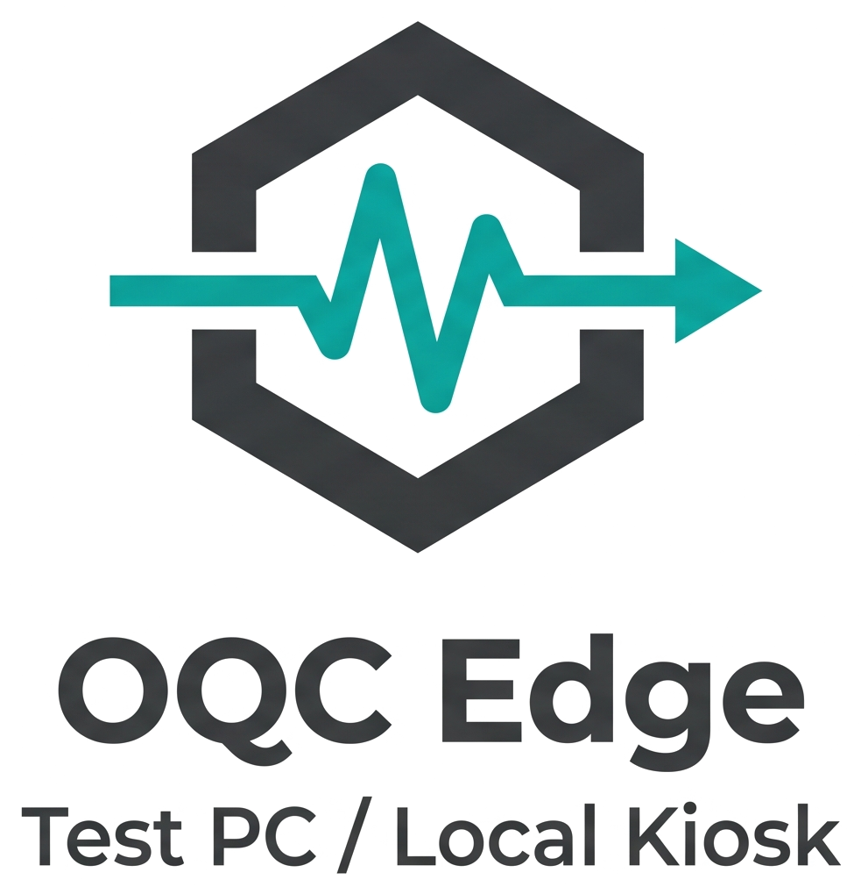
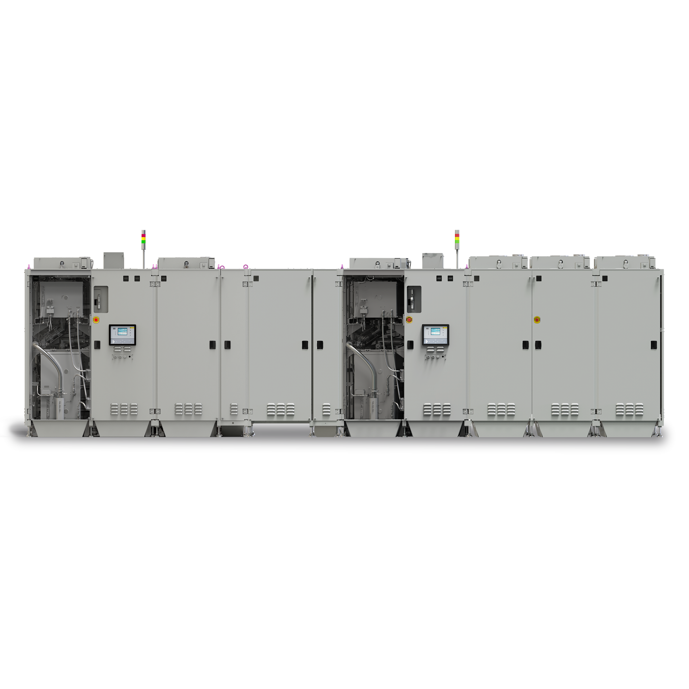
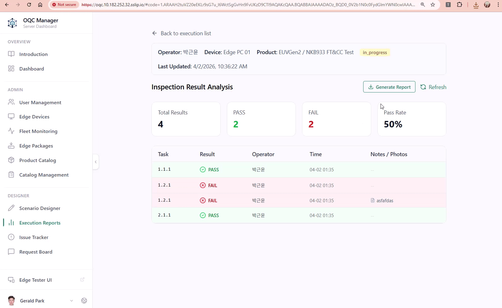
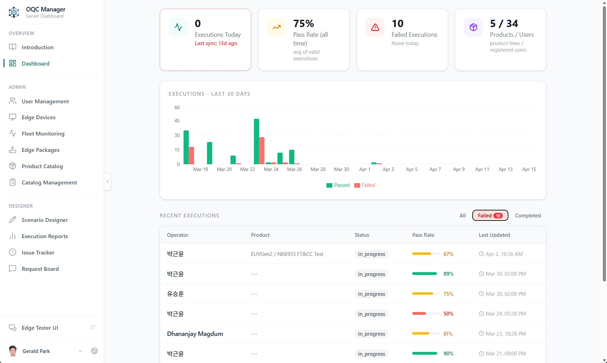
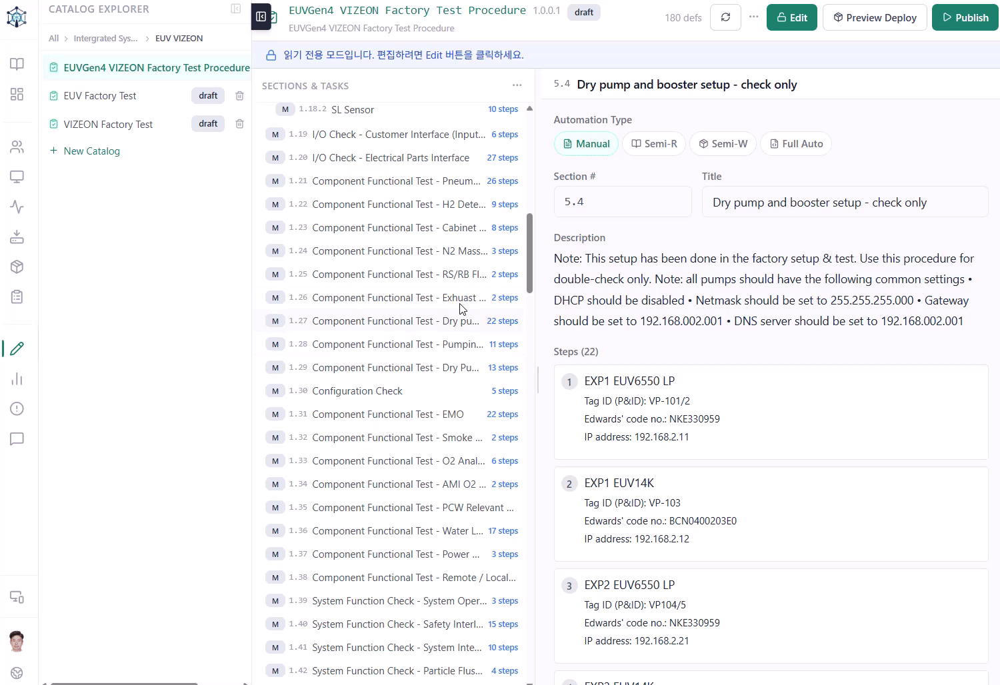
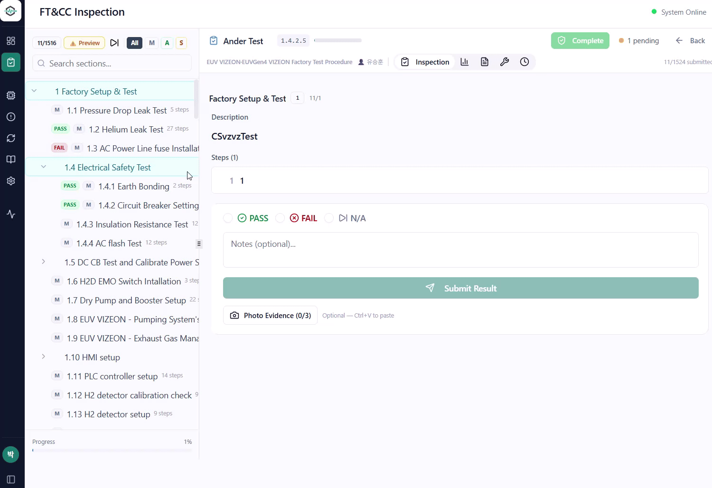

FIELD DEMO · GM & EXECUTIVE REVIEW
OQC Platform
EUV 장비 자동화 테스트 & 시운전 체크리스트
2026. 04. 20 · 15:00–17:00 KST
Edwards Korea · OQC Team
02 / 12
PROBLEM
지금 현장은 이렇게 일하고 있습니다
출하검사 — Excel 체크리스트 수기 작성

Excel 체크리스트 수기 작성
Pass만 남기고 실패 히스토리는 전부 소실
시스템 변경 시 절차서 전체 수작업 편집
셀 병합, 섹션 번호 재설정 — 섹션마다 구조 다름
구두 전달 · 암묵적 프로세스
숙련자 없으면 업무 중단
명시적 추적성 미확보
채팅, 전화, Word, 이메일… 히스토리 역추적 불가
검사자 편향 · 숙련자 의존도
사람마다 다른 기준, 편향 발생
수작업 보고서 · 높은 커뮤니케이션 비용
보고서 작성 추가 시간, 이슈 맥락 전달 비용
데이터가 남지 않으면 — 분석도, 개선도 없다
03 / 12
SOLUTION
OQC Platform이 해결하는 것
두 가지 축으로 접근합니다
🗄️
데이터화
모든 과정을 DB에 남긴다
- 절차서 버전 관리 — 개정 이력 · 변경 사유 DB 보존
- 수행 기록 전체 저장 — 검사자 / 시각 / 결과 / 실측값
- 이슈 · 조치 이력 일원화 — 재발 방지 데이터 축적
- Follow-up Action 할당 · 담당자 · 완료 기한 추적
- 고객사 · 검사자 · 장비별 Pass/Fail 통계 분석
- Docx 보고서 자동 생성 — 고객사 납품 양식 그대로
- 멀티 Edge PC 결과 서버에서 일괄 집계 · 조회
⚡
자동화
반복 작업은 OQC 플랫폼이 한다
- 장비 직결 — Modbus TCP / PLF / FMS Serial 프로토콜
- Signal 읽기 · 쓰기 자동 — 수동 모니터링 불필요
- Pass / Fail 자동 판정 — 기준값 벗어나면 즉시 알림
- 반자동 지원 — 현장 트리거 후 측정값 자동 캡처
- BDD Gherkin 시나리오 — 비개발자도 절차 직접 수정
- Edge → Server 실행 결과 자동 Push · 동기화
- 서버에서 절차서 변경 시 → 현장 Edge 즉시 반영
모든 테스트 과정이 기록되고, 반복 작업은 자동화됩니다
04 / 12
ARCHITECTURE
시스템 구조
OQC Manager (Cloud) + OQC Edge (현장 PC)

OQC Manager · Cloud
· 절차서 생성 · 편집
· 통계 대시보드
· 보고서 생성
· Edge 패키지 배포

OQC Edge · 현장 PC
· 절차서 다운로드
· 테스트 실행
· 이미지 첨부
· 결과 서버 업로드
· 장비 연결 관리
· 유저 관리

🔧 EUV 장비
Gen2 / Gen4 · 실제 테스트 대상 설비
Edge가 현장 장비와 직접 연결되어 시퀀스 실행,
상태값 수집, 결과 판정을 수행하는 최종 실행
레이어입니다.
· 자동 시퀀스 / 레시피 실행
· 센서 · I/O 상태 실시간 수집
· PLC / FMS 인터페이스 연동
· 테스트 결과 · 알람 이력 반환
05 / 12
TEST CLASSIFICATION
테스트 케이스 분류
자동화 수준에 따라 4가지로 나뉩니다
🤖
5건
완전 자동
사람 개입 없이 전자동
OQC가 장비에 명령을 전송하고
응답값을 받아 자동으로 Pass / Fail 판정
응답값을 받아 자동으로 Pass / Fail 판정
1
Modbus/PLF 명령 전송
2
장비 응답값 수신
3
기준값 비교 → 자동 판정
예시
Facility Start / Stop
펌프 속도 설정 · 확인
Vacuum 레벨 자동 확인
펌프 속도 설정 · 확인
Vacuum 레벨 자동 확인
📡
64건
반자동 · 읽기
트리거는 사람, 측정은 장비
엔지니어가 물리적 조작을 하면
OQC가 Modbus/PLF 값을 자동 수집하여 판정
OQC가 Modbus/PLF 값을 자동 수집하여 판정
1
엔지니어 물리 트리거
2
Modbus/PLF 값 자동 수집
3
기준값 비교 → 자동 판정
예시
Hz 측정 (버튼 누름 후 자동)
Air Flow 센서값 수집
온도·압력 측정값 확인
Air Flow 센서값 수집
온도·압력 측정값 확인
⚙️
9건
반자동 · 쓰기
명령은 자동, 확인은 사람이
OQC가 Modbus/PLF 명령을 자동 전송하면
엔지니어가 물리 상태를 눈으로 확인
엔지니어가 물리 상태를 눈으로 확인
1
Modbus 명령 자동 전송
2
장비 물리 동작 수행
3
엔지니어 육안 확인 후 입력
예시
밸브 Open / Close 확인
팬 구동 상태 점검
경보등 점등 여부 확인
팬 구동 상태 점검
경보등 점등 여부 확인
👁️
648건
수동
사람이 직접 확인 · 기록
물리 측정·육안 검사를 사람이 수행하고
OQC로 결과를 체계적으로 기록
OQC로 결과를 체계적으로 기록
1
현장 육안 · 계측기 점검
2
결과 입력 · 판정
3
이미지 Evidence 첨부
예시
명판 · 라벨 · 누수 확인
외관 · 케이블 연결 점검
측정기 수치 직접 확인
외관 · 케이블 연결 점검
측정기 수치 직접 확인
완전 자동 + 반자동 = 장비와 직접 통신 →
데이터 자동 수집 + Pass/Fail 자동 판정
수동 = 기존 Excel 대비 체계적 기록 +
이미지 Evidence 첨부 + 추적 가능
06 / 12
RESULT · DASHBOARD & REPORT
결과 — Dashboard & Docx Report
모든 테스트 결과가 집계되고, 버튼 하나로 완성본 문서가 생성됩니다
OQC Edge
──▶
Server Push
──▶
Download Report
리포트에 담기는 것
- 모든 Pass / Fail 이력 + 재측정 기록
- 이미지 Evidence (현장 사진 자동 삽입)
- 자동 판정 결과 + 측정값
- 이슈 조치 내역 · F/U 기록
- 전체 실행 타임라인
⚡
기존 대비 차이
수작업 보고서 수 시간 →
버튼 1회 즉시 완료
누락 없는 완전한 기록 · 양식 자동 준수
누락 없는 완전한 기록 · 양식 자동 준수
🏭
고객사 납품 양식
SKH / 삼성 / TSMC 포맷 Docx 템플릿 · 즉시
제출 가능

Docx Report 자동 생성 · 실제 화면

OQC Manager — 통계 대시보드
07 / 12
AUDIT TRAIL
실행 연대기 — 모든 기록
테스트 세션의 전체 흐름이 시간 순서로 저장됩니다
09:12:04
세션 시작 — Gen4 AZ #12
엔지니어 로그인 · 절차서 v2.1 로드 · Edge
장비 연결 확인
09:14:38
Step 1.1 PASS — Vacuum Level 확인
측정값 2.3×10⁻³ Pa · 기준값 <5.0×10⁻³ Pa
· 자동 판정 통과
09:31:17
Step 2.4 FAIL — Pump VP-203 rpm
측정값 2,810 rpm · 기준값 3,000±50 rpm ·
이미지 Evidence 첨부
09:35:02
이슈 조치 등록
담당자 기록 · "VP-203 인버터 파라미터 재설정
후 재측정 예정"
10:02:55
Step 2.4 PASS — 재측정 완료
측정값 3,012 rpm · 조치 결과 기록 · 이슈
Close
11:48:21
세션 종료 — 서버 Push 완료
총 47개 항목 완료 · Pass 44 / Fail 2 / Skip
1 · Dashboard 집계 반영
🗂️
무엇이 기록되나
누가 · 언제 · 어떤 값으로 · 어떤 판정을
내렸는지
모든 단계가 타임스탬프와 함께 DB에 영구 저장됩니다
모든 단계가 타임스탬프와 함께 DB에 영구 저장됩니다
📷
이미지 Evidence
FAIL 또는 수동 항목에서 현장 사진을 직접
첨부
리포트에 자동 삽입되어 추적 가능
리포트에 자동 삽입되어 추적 가능
🔄
재측정 이력
FAIL → 조치 → 재측정 전 과정이 별도 기록
최초값과 최종값 모두 리포트에 포함됩니다
최초값과 최종값 모두 리포트에 포함됩니다
기존 Excel에서는
덮어쓰면 사라지던 기록이
OQC에서는 모든 수정·재측정 이력이 영구 보존됩니다
OQC에서는 모든 수정·재측정 이력이 영구 보존됩니다
08 / 12
DEMO 1 · MANUAL TEST
Gen2 SKH #25 · Manual Test
Gen2 장비 앞에서 Maual 테스트를 시연합니다
TEST FLOW
1
절차서 편집 — Manager
2
Edge 배포 — 서버 → 현장
3
Execution 생성 — Edge
4
테스트 수행
Pass/Fail + 이미지 첨부
Pass/Fail + 이미지 첨부
5
서버 Push — 결과 업로드
6
Dashboard + Docx

Edge 테스트 수행

Manager 절차서 편집
09 / 12
DEMO 3 · AUTO TEST
EUV Pump Performance · Auto Test
Gen4 장비와 직접 연결 — 자동화 테스트를 라이브 실행합니다
Scenario 1 · Facility Start/Stop
# facility_start.feature
조건
Gateway가 실행 중이다
만약
주소 109에 값 2를 쓰면
그러면
명령이 성공 전송된다
만약
3초 후 Exp state(1310) 읽으면
그러면
Exp state → Starting
✅
그리고
Src state → Starting
✅
Scenario 2 · PFM Air Speed
펌프 속도 8조합 × 2사이클 자동 측정
Case 1
PB=160 / MB=102 / DP=100Hz
Case 2 PB=80
/ MB=51 / DP=100Hz
Case 3 PB=40
/ MB=26 / DP=100Hz
… Case 4–7 자동 순환
Case 8
기본값 복원 후 비교
✅ Pass/Fail
자동화 흐름
① Edge → Modbus/PLF 명령 자동 전송
② 장비 응답값 자동 수집·기록
③ 기준값 비교 → Pass/Fail 판정
④ 결과 서버 Push → Dashboard 반영
사람 시나리오 선택 · 실행 버튼
OQC 명령 → 수집 → 판정 → 기록
OQC 명령 → 수집 → 판정 → 기록
Gen4 자동화 테스트 · 라이브 실행 영상
10 / 12
IMPACT
결과 — 무엇이 달라지나
Before / After
BEFORE
AFTER · OQC
Excel · 기억에 의존
→
모든 수행 기록 DB 저장
검사자마다 다른 판정
→
자동 판정 기준 일관 적용
수작업 보고서 추가 시간
→
버튼 하나로 Docx 즉시 생성
F/U 이슈 이메일 · 메모 분산
→
단일 시스템에서 이슈 추적
데이터 없음 → 분석 불가
→
누적 데이터 → 통계 · AI 분석 가능
11 / 12
ROADMAP
향후 로드맵
지금이 시작입니다 — 현장 배포 · 피드백 반영 · 지속 개선
01
SOP 일원화
파편적으로 흩어진 절차서 → 표준 카탈로그로 통합
관리
02
Abatement 시스템 확대 적용
펌프 외 Abatement 라인까지 테스트 커버리지 확장
03
데이터 누적 → 통계 분석
테스트 결과 패턴 분석 → 크리티컬 패스 발견
04
AI 시나리오 작성 보조 · Summary 기능
시나리오 작성 자동화, 테스트 요약 리포트 자동
생성
05
장비 전 라인 커버리지
완전 디지털 출하검사 — 모든 출하 장비 디지털
기록
12 / 12
감사합니다
궁금한 점은 무엇이든 질문해주세요
OQC Team · Edwards Korea
2026. 04. 20